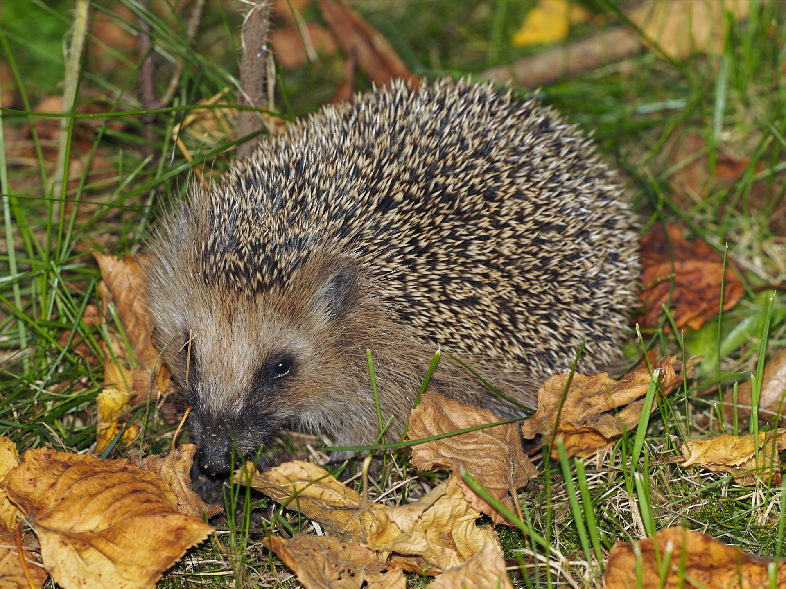

Обыкновенный ёж
| Обыкновенный ёж | |||||||||
|---|---|---|---|---|---|---|---|---|---|
|  | |||||||||
| Научная классификация | |||||||||
|
Домен:
Царство:
Подцарство:
Тип:
Класс:
Отряд:
Семейство:
Род:
Вид:
|
|||||||||
|
Международное научное название
|
|||||||||
| Erinaceus europaeusLinnaeus,1758 | |||||||||
| Ареал | |||||||||

Естественный ареал европейского ежа.
|
|||||||||
| Охранный статус | |||||||||
|
Обыкнове́нный ёж[1][2], или европе́йский ёж[2], или среднеру́сский ёж[3] (лат. Erinaceus europaeus), — вид млекопитающих из рода евразийских ежей семейства ежовых. Обитает в широколиственных лесах Западной и Центральной Европы, в том числе на Британских островах и в южной Скандинавии, а также в северных и центральных районах европейской части России; интродуцирован в Новую Зеландию[3][4].
Содержание
- 1 Внешний вид
- 2 Распространение
- 3 Подвиды
- 4 Генетика
- 5 Образ жизни
- 5.1 Места обитания
- 5.2 Активность
- 5.3 Питание
- 5.4 Размножение
- 6 Поведение
- 7 Значение для человека
- 8 Меры охраны
- 9 Документалистика
- 10 Примечания
- 11 Литература
- 12 Ссылки
Внешний вид
Обыкновенный ёж — животное небольших размеров, однако в целом его размеры для всего рода евразийских ежей — от средних до крупных. Длина тела составляет 23,7—29 см, хвоста — около от 14 до 32 мм[5][6] масса тела от 700—800 г у первогодков, до 2 кг - начиная со второго года жизни[7]. Уши относительно небольшие (обычно от 28,5 до 40,1 мм)[5]. У обыкновенных ежей, обитающих на Кипре, уши более крупные[8]. Морда вытянутая. Нос у животного острый и постоянно влажный. На верхней челюсти у ежей 20 мелких острых зубов, а на нижней — 16. Верхние резцы широко расставлены, оставляя место для прикуса нижним резцам. Голова относительно крупная, клинообразная, со слабоудлинённым лицевым отделом[9].
Лапы обыкновенного ежа короткие. На лапах по 5 пальцев с острыми когтями. Задние конечности более длинные, чем передние[8]. Иглы у обыкновенного ежа короткие, не более 3 см. На голове иглы разделены на 2 части «пробором». Поверхность игл гладкая, окраска их слагается чередованием буроватых и светлых поясков[10]. На спине, боках и голове иглы достигают в длину 2 см. Внутри они полые, наполненные воздухом. Растут иглы с такой же скоростью, как и волосы. Между иглами располагаются тонкие, длинные, очень редкие волосы. Голова и брюхо покрыты грубоватыми и обычно тёмными волосами[6][9]. У взрослых ежей обычно по 8 тысяч игл, у более молодых особей — около 3 тысяч[8].
На морде, лапах и животе у обыкновенных ежей окрас варьируется от желтовато-белого до тёмно-коричневого цвета[8], с возрастом он светлеет. Окрас на брюхе обыкновенного ежа обладает характерным рисунком — посередине брюха (пепельно-серого или светло-серого цвета с палевым оттенком), окружённого в свою очередь тёмными волосами, граничащими с иглами; проходит продольная полоса тёмно-серого или коричневого цвета. Однако, как уже было указано выше, с возрастом окрас светлеет (брюхо становится желтовато-серой) и рисунок становится менее контрастным, а у очень старых ежей его практически не видно. Окрас лап такой же, как и на наиболее тёмных участках брюха[11]. Иглы буроватого цвета, с тёмными поперечными полосами (у молодых особей цвет этих полос особей — светло-бурый, у взрослых — тёмно-коричневый)[8][11]. В целом, окрас покрытой иглами поверхности обыкновенных ежей светлее, чем у белогрудого ежа и темнее, чем у амурского[11]. Грудь и горло ежа, в целом, однотонные, без белых пятен, по центру брюшка проходит размытая более тёмная проточина. У ежей, живущих в Испании, бледный окрас[8].